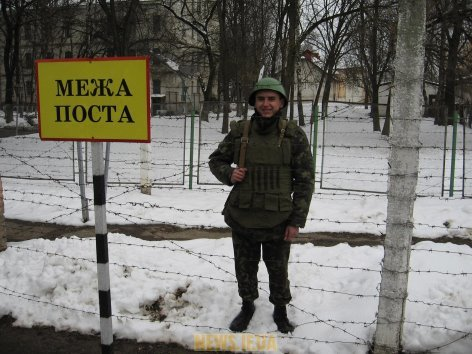

Обовʼязки чатового

Чатови́й — озброєний вартовий, який виконує бойове завдання з охорони й оборони дорученого йому поста.
Чатовий зобов'язаний:
- пильно охороняти та стійко обороняти свій пост, нічим не відволікатися, не випускати з рук зброї й
нікому не
віддавати її, включаючи осіб, яким він підпорядкований;
- під час виконання завдання на посту тримати зброю зарядженою, завжди готовою до застосування (при цьому
патрон у патронник не досилати);
-
рухаючись визначеним маршрутом, уважно оглядати підступи до поста й огорожу та доповідати через засоби
зв'язку про хід несення служби у визначені табелем постів строки;
-
не допускати до поста ближче, ніж на відстань, визначену в табелі постів, та позначки на місцевості
нікого,
крім начальника варти, помічника начальника варти й свого розвідного та осіб, яких вони супроводжують, а
також чергового варт (військової частини) у випадку, визначеному в статті 231 Статуту;
-
знати маршрут руху транспортних засобів варти, а також їх розпізнавальні знаки й сигнали;
-
уміти застосовувати засоби пожежогасіння, які є на посту;
-
викликати начальника варти у разі виявлення будь-яких неполадок в огорожі об'єкта (на посту) та за
будь-якого порушення поблизу свого чи сусіднього поста;
-
почувши сигнал технічних засобів охорони або гавкання вартового собаки, негайно доповісти до вартового
приміщення;
-
віддавати військове вітання начальникам, яким він підпорядкований, а також іншим начальникам, які
прибули на
пост в їх супроводі, згідно з правилами, визначеними Стройовим статутом Збройних Сил України.
Чатовому забороняється:
-
сидіти, притулятися до чого-небудь, спати
-
курити, розмовляти, їсти, пити
-
читати, писати
-
справляти природні потреби
-
передавати і приймати будь-які предмети
-
досилати без потреби патрон у патронник
-
заходити в зону дії технічних засобів охорони
Недоторканність чатового
Чатовий є особою недоторканною. Недоторканність чатового полягає у:
-
особливій охороні законом його прав та особистої гідності
-
підпорядкуванні його лише певним особам — начальнику варти, його помічникові та своєму розвідному
-
обов'язку всіх осіб неухильно виконувати вимоги чатового, визначені його службою
-
наданні йому права застосування зброї у випадках, визначених Статутом.
Застосування фізичної сили та зброї особовим складом варти
-
Застосуванню фізичної сили, вогнепальної та холодної зброї, якщо дозволяють обставини, мають передувати
попередження про намір їх використання. Без попередження фізичну силу, зброю можуть застосовувати у разі
виникнення загрози життю або здоров’ю військовослужбовців, нападу на чатового, на об’єкти, які охороняють,
вартове приміщення або зміну, що прямує до постів (з постів).
За неможливості уникнення застосування сили (зброї) це не повинно перевищувати міри, необхідної для
виконання покладених на чатових обов’язків. У разі заподіяння чатовими шкоди особовий склад варти забезпечує
в найкоротший строк подання потрібної допомоги потерпілим.
Про застосування фізичної сили (зброї) чатовий або розвідний негайно доповідає начальникові варти, а
начальник варти – черговому варт (черговому військової частини).
Перевищення повноважень у застосуванні сили (зброї) має наслідком відповідальність, встановлену законом
України.
-
Чатовим застосовується зброя без попередження у разі явного нападу на нього або на об’єкт, який він
охороняє.
-
Усіх осіб, які наближаються до поста або до забороненої зони, позначеної покажчиками, крім начальника варти,
помічника начальника варти, свого розвідного та осіб, яких вони супроводжують, чатовий зупиняє вигуком
“Стій, назад” або “Стій, обійти справа (зліва)”.
За невиконання особою, яка наближається до поста або до забороненої зони, цієї вимоги чатовий попереджає
порушника вигуком “Стій, стрілятиму” й негайно викликає начальника варти або розвідного. Якщо порушник не
виконує цієї вимоги, чатовий досилає патрон у патронник і робить попереджувальний постріл угору.
Якщо порушник не виконує й цієї вимоги та намагається проникнути на пост чи до об’єкта, який охороняють
(перетнути заборонену зону), або якщо він після такої спроби вдається до втечі, то чатовий застосовує зброю.
Чатовий, озброєний багнетом, попереджує порушника вигуком “Стій, буде застосована зброя” і негайно викликає
начальника варти або розвідного, не послабляючи уваги за об’єктом, що охороняє, стежить за поведінкою
порушника до прибуття резервної групи на чолі з начальником варти, розвідним.
-
В умовах поганої видимості, коли з відстані, яку зазначають у табелі постів, не можна розгледіти осіб, які
наближаються до поста або до забороненої зони, чатовий зупиняє їх вигуком “Стій, хто йде?”. Якщо відповіді
немає, то чатовий попереджає: “Стій, стрілятиму” й затримує порушника або діє відповідно до частин другої й
третьої статті 197 цього Статуту.
Про затримання порушника чатовий повідомляє у вартове приміщення, не послабляючи уваги, й далі охороняє
об’єкт, який йому доручено, та стежить за поведінкою порушника.
Якщо на вигук чатового надійде відповідь “Іде начальник варти (помічник начальника варти, розвідний)”,
чатовий наказує: “Начальник варти (помічник начальника варти, розвідний), до мене, решта – на місці”; за
потреби чатовий вимагає, щоб особа, яка наближається до нього, освітила своє обличчя. Переконавшись, що той,
хто назвався, справді начальник варти (помічник начальника варти, розвідний), чатовий допускає до себе всіх
осіб, які прибули.
Якщо той, хто назвався начальником варти (помічником начальника варти, розвідним), виявиться невідомим або
якщо особи, які перебувають з ним, не виконують вимогу чатового залишитися на місці, чатовий попереджає
порушників вигуком “Стій, стрілятиму”. За невиконання порушником цієї вимоги чатовий застосовує до них зброю
без попереджувального пострілу вгору.
-
Коли необхідно вступити в рукопашний бій для захисту себе або об’єкта, чатовий повинен рішуче і сміливо
діяти багнетом і прикладом.
-
У крайніх, невідкладних випадках або за несправності засобів зв’язку й сигналізації чатовий може викликати
на пост начальника варти або розвідного пострілом угору.
-
Чатові інших постів, почувши постріл або стрілянину, зобов’язані повідомити про це засобами зв’язку
начальника варти і посилити пильність, а за можливості надати вогневу підтримку.
-
Начальник варти має право застосовувати зброю без попередження сам і складом варти у разі явного нападу на
об’єкти, які охороняються, на чатових, вартове приміщення, зміну, що прямує до постів (із постів). Крім
того, начальник варти має право застосовувати зброю для припинення заворушення серед заарештованих за умови
виникнення безпосередньої загрози життю і здоров’ю людей або до заарештованого, який намагається втекти. У
цих випадках до застосування зброї він має голосом або пострілом угору попередити осіб, проти яких буде
застосовано зброю.